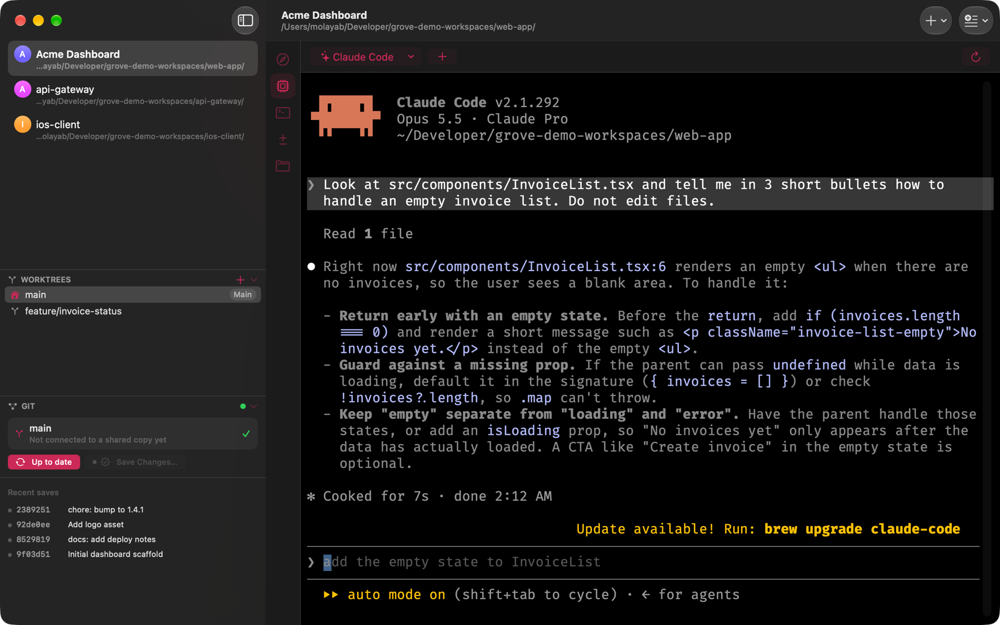

Guía
Grove para Mac · Actualizado en noviembre de 2026
git worktree permite que un repositorio tenga varios directorios de trabajo a la vez, cada uno
en su propia rama. Puedes arreglar un bug en main mientras una rama de feature sigue
compilando, revisar un pull request sin hacer stash, o darle a cada agente de IA su propia rama para que dos
agentes nunca editen los mismos archivos.
El problema es todo lo que rodea al comando. Después de git worktree add todavía tienes que
hacer cd a la carpeta nueva, abrir otra pestaña de terminal, apuntar tu editor y tu herramienta
de diff ahí y reiniciar el agente. Y luego recordar qué ventana es de qué rama.
<raíz>/<repo>/<rama>, para que no tengas que pensar en rutas.

Los worktrees y los agentes encajan bien: ejecuta Claude Code en una rama de feature en un worktree y Codex en un bugfix en otro, cada uno en su checkout aislado. La sesión de terminal de cada checkout sigue corriendo cuando cambias a otro, así que un agente a mitad de una tarea no se interrumpe. Cuando termine, abre la pestaña Cambios de ese worktree y revisa exactamente qué cambió.
Más sobre los agentes en Ejecuta Claude Code en una app nativa de Mac.
Grove usa el git que ya tienes instalado. Los worktrees que crea son worktrees normales:
git worktree list los muestra y puedes seguir usando la terminal junto a Grove. Nada se guarda
en un formato propietario, y Grove no hace force push ni borra ramas.
Grove está hecha en Swift y SwiftUI, no en Electron. Sigue la apariencia de tu sistema, abre rápido y mantiene tus agentes y shells corriendo aunque cierres la ventana.
Sí. Lee la lista de worktrees del repositorio, así que los existentes aparecen apenas agregas el repositorio.
No. Grove usa git estándar por debajo, así que la terminal, otros clientes de git y Grove ven el mismo estado.
Hay una prueba gratis de 7 días. Después, una licencia cuesta $9.99 en un solo pago para un Mac, con todas las actualizaciones futuras incluidas. Grove necesita macOS 26 o posterior.